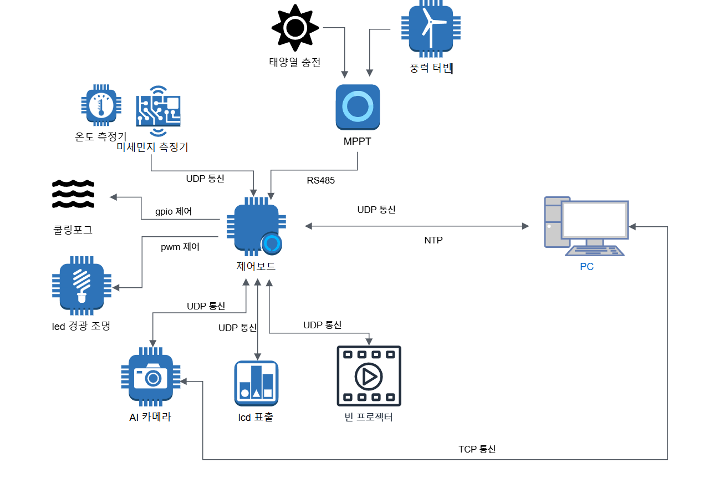

서울시 공공 와이파이 트래커
1. 제품 이미지

2. 주요 기능
공원 스마트 트리 단말로, 일몰과 일출 시간에 경광 조명 제어. 대기 측정 데이터 lcd 표출, 쿨링 포그 동작 제어, ai카메라 에게 위급 상황 수신시 조명및 스피터 음성 제어
3. 아키텍처 다이어그램
4. 나의 역할
- Led 디밍 제어 기능 → 모션 감지시 led pwm 제어 밝기조절 모션이 감지되면 밝기 100% 변경. 모션 인터럽트 Low 가 되면 밝기 50%로 변경
- 쿨링 포그 제어기능 → 온도 습도 측정기로 들어오는 데이터를 바탕으로 쿨링포그 동작 및 정지 시나리오 기능 구현. 요구사항에 맞는 여름에 작동하도록 현재 작동 시간의 달 확인
- 일몰 일출 관리 기능 → 과천 일출 시간과 일몰 시간을 계산하여 Led 디밍 제어 일출 시 Led Off 일몰시간에 On
5. 결과 및 효과